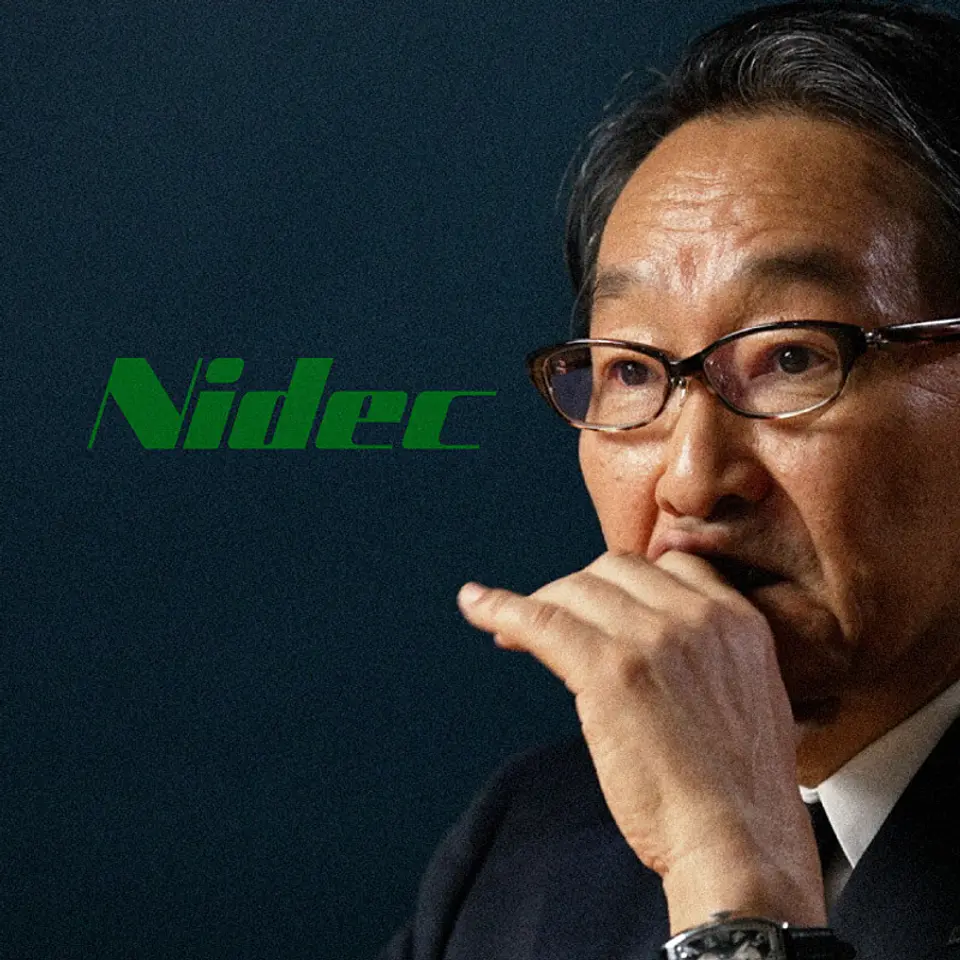
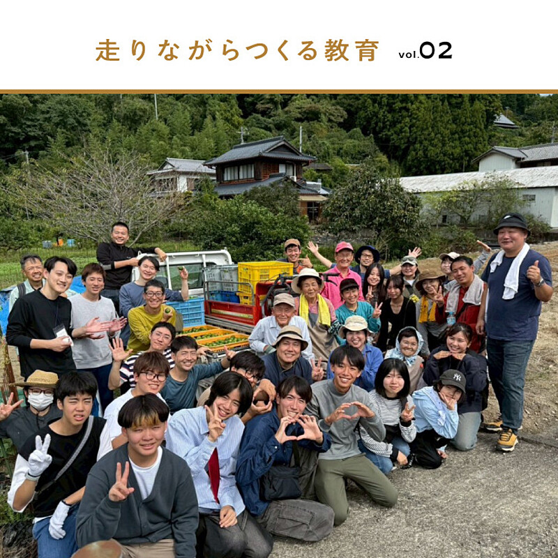

01ニデックの岸田社長が辞任へ
発行日時：2026年9月29日 05:30 JST

あなたに関係ありそうな理由
経営者交代、巨額損失、取締役会の説明責任が同時に起きたとき、事業の強さと統治の弱さを分けて読む材料になります。
概要
ニデックは、岸田光哉社長が9月30日付で辞任する見通しとなり、約1兆円の減損損失を計上する可能性があると伝えられた。発端は中国子会社に関する内部通報だった。会計処理に疑義があるとして第三者委員会が設けられ、2025年9月に調査を始め、2026年3月に報告書を受け取った。従来は約2500億円の資産がリスクにさらされるとみられていたが、今回の損失見込みはそれを大きく上回る。車載、家電、機械関連の資産が対象になり得るという。記事は、損失額だけでなく、調査結果を踏まえた取締役会が経営体制をどう判断し、誰が説明するのかを追っている。
9月25日の取締役会では、問題を把握しながら適切な対応を取らなかった疑いがあるとして、経営陣への批判が出たとされる。会社は人事や減損を検討中と説明していた一方、その時点では決定していないという立場だった。社長の辞任は、本人の意思によるのか、取締役会の判断がどこまで働いたのかでも受け止め方が変わる。記事が示す純資産は1兆7000億円超で、1兆円規模の損失は財務の見え方を大きく変える。AI向けデータセンター需要によるHDD関連の好調さなど、事業面に明るい材料があっても、会計と統治への疑念は別に解く必要がある。
市場はその不確実性を先に織り込んだ。9月28日には株価がストップ安となり、時価総額は2兆8000億円を下回った。表示コメントでも、M&Aで広げた事業の資産価値をどう検証するのか、過年度の数字を修正する可能性はあるのか、社外取締役を含む取締役会がどのように再発防止を主導するのかが論点になっていた。損失が評価の見直しにとどまるのか、過去の取引や買収判断まで検証が広がるのかで、投資家や取引先が受ける影響は違う。良い事業部だけを強調せず、問題の範囲と確定していない点を分けて示すことが必要だ。決算での処理時期、減損対象の事業・地域、第三者委員会の提言をどう実行するかが明らかになれば、買収後の管理や報告の仕組みにまたがる構造的な問題かを見極めやすくなる。業績回復の期待だけで結論を急がず、損失の内訳、現金収支への影響、監査・調査の進捗、次の経営体制の選び方を順に確認したい。企業の信頼回復は、後任を置くだけでなく、問題を見つけて止める仕組みを具体的に示せるかにかかっている。
仕事や会話で使える一言
「事業が伸びていても、会計と取締役会の説明は別に確認したいですね。」
NewsPicks原文を読む
02【業界激震】ラクスが「SaaS株を買いまくる」理由
発行日時：2026年9月29日 05:30 JST
あなたに関係ありそうな理由
SaaS企業の成長策を、営業人数の拡大ではなく、資本提携・OEM・顧客基盤の組み合わせとして読む視点が得られます。
概要
ラクスが、同じSaaS業界の上場企業へ相次いで資本を入れている。プラスアルファ・コンサルティングの株式を231億円で取得して持ち分を22.21％に高め、ロボティクス・ペイメントには3.10％、freeeにも約5％を保有する。記事が意外性を指摘するのは、ラクスが単に新規顧客を増やすためではなく、SaaS株を資本政策の道具として扱い始めた点だ。IT人材事業を167億円で売却し、資金調達も組み合わせて投資原資を確保する。手元資金と借入を合わせ、将来は1000億〜2000億円規模まで活用する構想が語られている。
背景には、国内SaaS市場の成長が永遠には続かないという問題意識がある。人口減少で中小企業の数が縮む一方、AIによって機能の差が小さくなり、個社が広告や営業だけで顧客を取り切るコストは重くなりやすい。記事は、若い企業が株式市場で低く評価される局面では、株式取得や提携で顧客層・販売網・製品をつなぐ方が、ゼロから販売人員を増やすより合理的になり得ると説明する。アクティビストのオアシスがプラスアルファ株を短期間で取得・売却したことも、ラクスが出資を急いだ一因とされる。市場取引の機会を事業連携へどう転換するかが問われた。
記事では、人材管理システム「タレントパレット」をラクスの「楽楽人事労務」とOEM連携させる動きも具体例として挙げる。ラクスが強い中小企業と、プラスアルファが持つ大企業顧客は必ずしも重ならず、開発を完全に一体化しなくても販路を補い合える可能性がある。freeeへの出資は現時点では投資色が強いが、将来の再編を読む材料にはなる。出資先の独立性を保ちながら、どこまでデータ、営業、開発の連携を深めるのかは、案件ごとに設計が要る。顧客情報やブランドを安易に混ぜれば利用者の不安にもつながるため、協業の範囲と責任分担を透明にすることも欠かせない。表示コメントでは、SaaSの統合は顧客の移行負担や既存プロダクトの重複を伴うため、持ち株比率だけで成功とは言えないという指摘もあった。見るべきなのは、出資先の株価ではなく、提携後にどの顧客課題を解き、販売費や解約率をどう変えられるかだ。投資と事業の接点を数字で示せるかが次の焦点になる。
仕事や会話で使える一言
「顧客を一社ずつ取りに行く以外に、資本提携で市場に入る道もありますね。」
NewsPicks原文を読む
03【実名ランキング】湾岸タワマン39棟で「暴落説」を検証
発行日時：2026年9月29日 05:30 JST
あなたに関係ありそうな理由
東京の高額マンションを「湾岸全体の暴落」と一括りにせず、価格帯・築年・賃料・買い手の資金余力で分けて見る手掛かりになります。
概要
湾岸タワーマンションは暴落したのか。記事は、勝どき・月島・晴海・豊洲・有明にある39棟を対象に、流通量を確保できる3LDKを中心として、年初から7月までの価格変化を調べた。7月の平均価格は1億5503万円。年初より上がったのは9棟で、シティタワー有明は5.7％、グランアルト豊洲は3.7％、プライブブルー東京は3.1％上昇した。一方で、全体としては下がった棟の方が多い。ここから見えるのは、同じ湾岸でも立地、築年、価格帯で動きが異なり、「湾岸」という地名だけでは需給を説明できないということだ。
長い目でみれば、2025年秋ごろまで価格上昇が続いた後に調整に入った。だが、記事が示す2年間の推移は急な坂ではなく、階段のように上下する。一例では、勝どきザ・タワーが半年で930万円下がったのに対し、近隣の別棟は60万円の下落にとどまった。2億円以上の6棟はすべて下落し、平均下落率は3.5％だったのに対し、1億3000万円未満の6棟は5棟が上昇、平均0.5％増となった。記事は1億6000万円前後を、世帯年収1400万円程度のパワーカップルが住宅ローンを組める上限の一つとして置き、買い手の資金余力が価格の分かれ目になっていると読む。
高額帯が弱含んでも、直ちに地域全体の崩れを意味しない。賃料が上がっているため、保有コストとの比較では買い手が残るという現地の見方も紹介される。表示コメントでも、購入価格だけでなく、賃料、修繕積立金、将来の売却時に次の買い手が見つかるかを合わせて見るべきだという論点があった。特に築年が進んだマンションは、管理や大規模修繕の計画によって評価が分かれる。記事中の数字は売り出しや推定の変化を基にしたものなので、実際の売却額や住宅ローンの通りやすさと同一ではない。金利が上がる局面では、月々の返済額に対する感度も棟ごと・買い手ごとに違う。値動きの大きさだけでなく、保有し続けられる資金計画まで確かめる必要がある。ランキングは市場の入口であって、個別物件の成約価格や室内条件までを保証するものではない。売却・購入・賃料設定を考える場面では、同じ棟の直近成約、競合在庫、賃貸の成約速度を確認し、価格帯ごとの買い手像を描くことが実務的だ。
仕事や会話で使える一言
「暴落かどうかより、どの価格帯の誰が買えるのかを見た方が判断しやすいですね。」
NewsPicks原文を読む
04【言語哲学】「伝えたつもり」の落とし穴
発行日時：2026年9月29日 05:30 JST
あなたに関係ありそうな理由
依頼、評価、打合せのように同じ言葉を使っていても認識がずれる場面で、説明を増やす前に何を確かめるべきかを考えられます。
概要
「伝えたつもりなのに伝わらない」ことは、単なる話し方の不足ではない。記事は小野純一氏の著書を手がかりに、言葉の意味が話し手の頭の中だけで決まるわけではなく、聞き手の経験や場面との関係で形づくられると説明する。たとえば「貫禄」という語は、存在感を指す場合もあれば、体格の大きさを指す場合もある。辞書にある定義を知っていても、誰が、どの状況で、誰に向けて使ったかで受け止めは変わる。言葉は固定した札ではなく、似た使われ方の集まりとして働くという見方が記事の出発点だ。
この見方に立つと、「誤解された」と言えば済む場面は少なくなる。聞き手が文脈から自然に導いた読み方を、話し手が後から「そんな意味ではない」と退けるだけでは、意図を私物化しかねない。もちろん悪意ある曲解まで受け入れる必要はないが、何が共有されていなかったのかを確かめずに、相手の理解だけを誤りにするのは危うい。記事は、人と人の理解が完全に重なるとは限らないことも強調する。経験、立場、評価される基準が異なれば、同じ説明を聞いても注目する点が変わる。だから対話は一度で終わる伝達ではなく、差を見つけて調整する行為になる。
表示コメントでは、職場ほど用語や定義を明示的に共有する必要があるという声が目立った。管理者が一つの定義を押しつけるだけでなく、評価制度や目標が異なれば「品質」「急ぎ」「責任」といった語の優先順位も変わる。実務で役立つのは、抽象語を避けることではない。たとえば「早めに」「丁寧に」「対応する」と言ったあと、期限、完了状態、誰が判断するかを具体例で確認することだ。相手に「どう理解しましたか」と聞き返せば、誤解を責める前にずれを発見できる。記録を残すなら、結論だけでなく、その結論にした理由や保留した点も添えると、後で同じ言葉を別の意味に読み替えにくい。同じ言葉を使うことより、相手が判断に必要な前提を持っているかを確認する方が、結果としてやり取りの回数や手戻りを減らす近道になる。曖昧な語ほど、早めの確認が有効だ。滑らかに話せることと、理解が成立していることは別である。伝わらなさを失敗として隠さず、次の対話の材料にする姿勢が、会議や依頼の精度を上げる。
仕事や会話で使える一言
「『早めに』の意味が同じか、期限と完了状態まで合わせましょう。」
NewsPicks原文を読む
05与えるだけでなく、受け取るものも大きい…神山まるごと高専と企業の3年間
発行日時：2026年9月29日 11:00 JST

あなたに関係ありそうな理由
地域・教育・企業の連携を、寄付やCSRの一方向ではなく、現場の課題と人材育成を往復する仕組みとして考えられます。
概要
徳島県神山町にある神山まるごと高専は、人口5000人に満たない地域で2023年に開校した5年制の私立高専だ。テクノロジー、デザイン、起業家精神を掲げ、1学年は約40人。企業からの奨学金で実質的に学費負担を抑える仕組みを持つ。記事は、その支援を単なる資金提供で終わらせず、企業と学生が地域の課題に一緒に向き合う3年間を追う。奨学金パートナーは11社で、各社が10億円の基金をつくり、学年ごとに4人の奨学生を支える。制度の核は、支援する側と受ける側を固定しないことにある。
富士通とデロイト トーマツの取り組みでは、学生が企業社員と同じ現場に入り、神山の資源や事業を調べる。すだちの収穫支援では、農業の課題や事業性を学び、翌年にはグリーン&ソーシャルツーリズムをテーマに、9社から約30人の社員と10人以上の学生が活動した。富士通は、バスに代わる持続可能なタクシーをデータで検討し、学生は「Tapaz」という事業を立ち上げた。デロイト トーマツも食品輸出企業との協働で、学生がロゴや商品を考える機会をつくった。教室で出された課題ではなく、地域にある仕事の未解決部分を扱うことが特徴だ。
企業側にも変化がある。記事では、富士通の参加社員の34％が「まず一歩踏み出す意識が高まった」と答えたと紹介される。学生の自由な発想に触れることで、自分の仕事やキャリアを見直す人もいた。一方で、企業が教育を支配したり、学生を都合よく使ったりしない境界線は必要だ。記事は、学校の独立性を保ちながら、対話と実践を重ねる設計を重要視する。地域で起きていることを美談にせず、活動に必要な時間や、継続できなかった試みも共有できる関係が欠かせない。成果を急いで数値化しすぎると、試行錯誤する余地や学校側の判断を狭めかねず、連携の質を定期的に話し合う場も必要になる。表示コメントでも、企業の大人こそ学び直しや将来の人材とのつながりを得ているという声があった。地域連携を考えるなら、何人参加したかだけでは足りない。誰の課題を誰と解くのか、学生・地域・企業がそれぞれ何を持ち帰るのか、活動後に関係がどう続くのかまで設計して初めて、相互に価値が生まれる。
仕事や会話で使える一言
「支援する側も学び手になるように、地域との関わりを設計したいですね。」
NewsPicks原文を読む